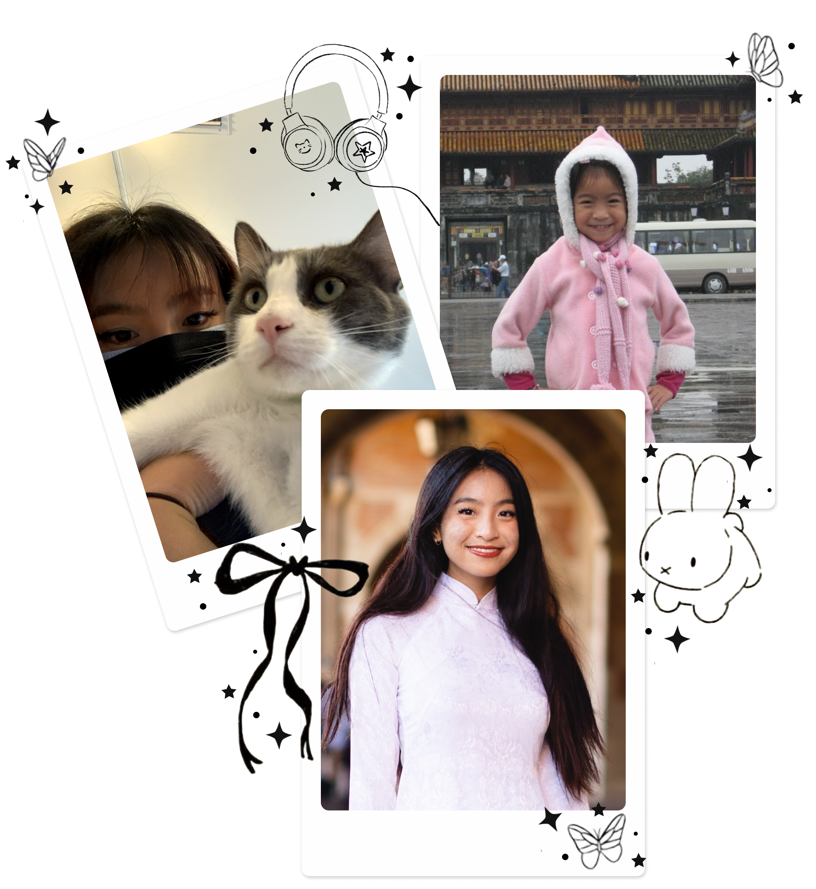

Let me re-introduce myself
Hello again, I'm Cassidy
A
From an early age, I found joy in immersing myself in the world of stories, whether they came from books, films, museums, or conversations with others. Learning other's stories allowed me to understand opposing perspectives and empathize with different characters.
This love for stories eventually led me to become a storyteller myself, where I am able to hone in on my soft skills needed as a UX designer.
With a background in Cognitive Science and a minor in Digital Humanities from UCLA, along with my Specialization in Computation, I bring a unique perspective to design, psychology, and technology.